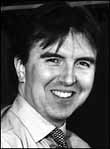

|
Journalist Nick Cook
discusses the MEG Nick Cook's book, The Hunt for Zero Point: Inside the Classified
World of Antigravity Technology, 2002 U.S. edition (there is an earlier
2001 British edition), mentions the MEG as its last paragraph. Here is
the full quotation:
Extract from Nick Cook's
The Hunt for Zero Point, Broadway Books, New York, 2002, p. 277-278.
Background on Nick Cook
For twelve years, Nick Cook has served as Aviation Editor of Jane's
Defence Weekly, the world's leading military affairs journal. He is
also widely published in newspapers such as London Times, Sunday
Times, and Sunday Telegraph, with many of his articles being
syndicated worldwide. He lives in London. Comments by Tom Bearden:
Nick confused the 2.5 KW basic unit we will develop in one year after we
get funding, with what we have already developed (which is just successful
lab experimental devices, much smaller). He also missed the E in MEG
stands for "electromagnetic", but that's quibbling. At least it's a very
positive mention! |